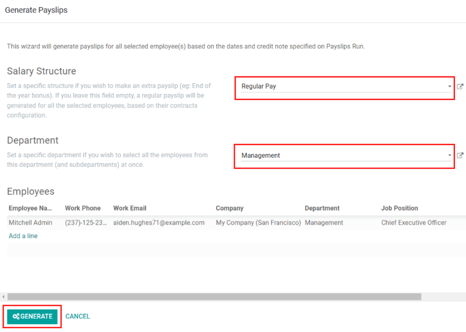

Payslips¶
Payslips are created either by the employees themselves or their managers, and are approved by authorized employees (typically managers). Then, once payslips are approved, employees are issued payslips and are paid either by check or direct deposit, depending on how their employee profile is configured.
The Payslips drop-down header of the application consists of three sections: To Pay, All Payslips, and Batches.
These three sections provide all the tools needed to create payslips for employees, including individual payslips, a batch of payslips, or commission payslips.
To pay¶
Click on to see the payslips that need to be paid. On this page, Odoo displays the payslips that have not been generated yet, and can be created from this dashboard.

Each payslip will list the Reference number for the individual payslip, the Employee name, Batch Name, the From and To date range, the Company, the Basic Wage, Net Wage, and the Status of the payslip.
Clicking on an individual payslip entry will show the details for the individual payslip.
Create new payslip¶
A new payslip can be created from the Payslips To Pay page () or the Employee Payslips page (), by clicking the Create button in the top-left corner.
Clicking Create reveals a blank payslip form, wherein the necessary payslip information can be entered.
Required fields¶
On the blank payslip form, a number of fields are required to be filled in with the necessary information. These required fields are represented by bold lines.

Employee: Type in the name of an employee, or select the desired employee from the drop-down list. Upon selecting an employee, several other fields on the payslip form may auto-populate. Typically, after making a selection in the Employee field, Odoo auto-populates the Contract, Structure, and Payslip Name fields, but only if that information is already on that employee’s form in the Employees app.
Period: Click the default date to reveal a pop-up calendar. On this calendar, use the < (less-than) and > (greater than) icons to select the desired month, and click on the desired day to select that specific date as the start date for the payslip. Repeat this process to add an end date for the payslip in the field below.
Contract: Using the drop-down menu, select the desired contract for the employee. Only the available corresponding contracts for the selected employee appear as options.
Structure: Using the drop-down menu, select the salary structure type. Only the available corresponding structures for the selected contract for that specific employee appear as options.
Payslip Name: In the blank field, type in the name for the payslip. The name should be short and descriptive, such as
April 2023.Company: In the Accounting Information tab, select the company the payslip applies to from the Company drop-down menu.
Salary Journal: In the Accounting Information tab, enter the salary journal in which the payment will be reflected, and found in the Accounting application.

Important
It is recommended to check with the accounting department to ensure every entry that affects the Accounting application is correct.
Optional fields¶
Reference: Any note or reference message for the new entry can be entered here.
Company Car: If applicable, select the company car from the drop-down.
Worked Days: In the Worked Days & Inputs tab, the entries under Worked Days (including the Type, Description, Number of Days, Number of Hours, and Amount) are automatically filled in, based on what was entered for the Period, Contract, and Structure fields of the payslip form.
Salary Computation: The Salary Computation tab is automatically filled in after the Compute Sheet button is clicked. Doing so displays all the wages, deductions, taxes, etc. for the entry.
Batch Name: Located in the Accounting Information tab, select the payslip batch this new payslip should be added to from the drop-down menu.
Date Account: Located in the Accounting Information tab, enter the date on which the payslip should be posted, by clicking on the drop-down menu, and navigating to the correct month and year using the < > (less-than/greater-than) icons in the calendar pop-up window. Then, click on the desired date.
Salary Journal: This field, located in the Accounting Information tab, represents the journal that the payslip will be logged in, and is automatically selected when the Contract and Structure are entered in the payslip form.
Accounting Entry: This field, located in the Accounting Information tab, is automatically filled in once the payslip is confirmed.
Save and process new payslip¶
When all the necessary information on the payslip is entered, click Save to save the data, or click Discard to delete the entry.
Note
Saving the entry is not required in order to compute the sheet, although it is considered best practice to do so. The Compute Sheet button can be clicked without first saving the payslip. Doing so will save the entry and compute the sheet.
Click the Compute Sheet button to register all the information, and have the Salary Computation tab populated. If any modifications need to be made, click the Edit button, make the desired changes, then click the Recompute Worked Days button to have the changes reflected in the Worked Days and Salary Computation tabs.
To print the payslip, click the Print button. To cancel the payslip, click the Cancel Payslip button.
Once everything on the payslip form is correct, click the Create Draft Entry button to create the payslip. The chatter is automatically updated to show the email sent to the employee, along with a PDF copy of the payslip.

Next, the payment must be sent to the employee. To do this, click the Make Payment button. Doing so reveals a pop-up form, in which the desired Bank Journal that the payment should be made against must be selected from a drop-down menu. Then, click the Confirm button to confirm the journal, and return to the payslip.

If a payment needs to be cancelled or refunded, click the corresponding Refund or Cancel Payslip button, located at the top of the payslip form.
Important
In order for a payslip to be paid, the employee must have a bank account entered in their contact information. If there is no bank information, a payslip cannot be paid, and an error will appear when the Make Payment button is clicked. Banking information can be found in the Private Information tab on the employee’s card. Edit the employee card, and add banking information, if it is missing.
All payslips¶
To view all payslips regardless of status, go to . Here, all payslips are organized by batch (in a default list view).
Click on the ▶ (arrow) next to the individual batch name to view all the payslips in that particular batch, along with all the payslip details. The number of payslips in the batch is written in parenthesis after the batch name. The Status for each individual payslip appears on the far-right side, indicating if it is in Draft Mode, Waiting, or if it is Done.
Note
Draft indicates the payslip is created, and there is still time to make edits, since the amounts are not calculated.
Waitingindicates the payslip has been calculated and the salary details can be found in the Salary Computation tab.Doneindicates the payslip is calculated and ready to be paid.

Click on an individual payslip to view the details for that payslip on a separate page. Using the breadcrumb menu, click Employee Payslips to go back to the list view of all payslips.
A new payslip can be created from the Employee Payslips page, by clicking the Create button in the upper-left corner. Doing so reveals a separate blank payslip form page. On that blank payslip form page, enter all the necessary information, as described in the Create a new payslip section.
To print PDF versions of payslips from the Payslips to Pay or Employee Payslips pages, first select the desired payslips by clicking on the individual checkbox next to each payslip to be printed. Or, click the box next to Reference, which selects all visible payslips on the page. Then, click the Print button to print the payslips.

Payslips can also be exported to an Excel spreadsheet. When exporting, all payslips are exported regardless of whether some are selected or not. Click on the Export All button (download icon) to export all payslips to an Excel spreadsheet.

Note
Both To Pay and All Payslips display all the detailed information for each payslip.
Batches¶
To view payslips in batches, navigate to to display all the payslip batches that have been created. These payslip batches are displayed in a list view, by default.
Each batch displays the Name, Date From and Date To dates, whether it was a Credit note, its Status, and the Company.

Click on an individual batch to view the details for that batch on a separate page. On this batch detail page, modifications can be made. To make any modifications to a batch, click the Edit button. Then, proceed to make any necessary changes.
When all desired changes have been made, click either Save to save the changes, or Discard to revert back to the original data.
After modifications have been saved, click the Generate Payslips button to reveal a Generate Payslips pop-up form, in which payslips affected by the changes can be created or modified.
All payslips associated with the batch are displayed in the employees section of the Generate Payslips pop-up. To filter the results by either the Salary Structure and/or the Department, select a salary structure and/or department from the respective drop-down menus.
Only employees that match the selected Salary Structure and/or Department appear in the employees list. Click the Generate button at the bottom of the Generate Payslips pop-up window to generate the modified payslips, and close the pop-up window.
Back on the batch details page, click the Create Draft Entry smart button to create a draft of the payslips.

Once the draft payslips are created, the button changes to say Make Payment. Click the Make Payment button. A pop-up window appears, in which the bank journal information must be entered. Select the Bank Journal from the drop-down list, and click Confirm to process the payslips, and pay the employees.
On the batch detail page, the number of payslips in the batch is accessible via the Payslips smart button, located in the top-right corner. Individual payslips for the batch can be viewed by clicking the Payslips smart button in the top-right corner.
Use the breadcrumb menu to navigate back to the individual batch detail page, or back to the list of all batches.

Create a new batch¶
To create a new batch of payslips from the Payslips Batches page (), click the Create button in the upper-left corner. Doing so reveals a blank payslip batch form on a separate page.
On the new payslip batch form, enter the Name for the batch, and select the date range to which the batch applies, by clicking the ▼ (drop-down arrow) icon in the Period fields, which reveals a calendar pop-up window. From this calendar pop-up window, navigate to the correct month, and click on the corresponding day for both the start and end dates.

If the batch is a credit note, check the box next to Credit Note. Then, in the Generation Date field, select the date the payslips should be generated from a calendar pop-up window. This generated date is reflected in the accounting journal entries.
Lastly, in the Company field, select the company these payslips are written against.
When all the information on the payslip batch form is correct, click the Save button to save the information. To delete the entry, click the Discard button.
To create the payslips for the newly-created batch, click the Generate Payslips button at the top of the form.
When clicked, a pop-up window appears showing all the payslips that will be created. To remove any individual payslips, click the black ✖ (x mark) icon at the far right of the payslip line.
If a specific Salary Structure or Department needs to be specified for the batch, select them from the corresponding drop-down menus.
Click the Generate button at the bottom of the pop-up window to create the payslips for the batch.

Note
On the Generate Payslips pop-up window, selecting a Department and/or Salary Structure only displays payslips that apply to those specifically-selected parameters.
If there are any errors or issues preventing the payslips from being generated, an error message appears in the top-right section. This error box disappears on its own after several seconds, or the ✖ (x mark) icon can be clicked to close the alert.
To remedy the issue, make any necessary modifications (e.g. removing any payslip lines that cannot be processed), then click the Generate button again.
Once the payslips have been successfully generated, the screen returns to the payslip batch form.
From here, click the Generate Draft Entry button to change the payslips’ status from Draft to Done.
Once payslips have been generated, click the Make Payment button to process the payments. Doing so reveals a pop-up window, in which the proper banking information must be entered. In this pop-up window, select the appropriate Bank Journal from the drop-down menu, and enter the appropriate file name.
When done, click the Confirm button to confirm the information, or click Cancel to discard.
Generate commission payslips¶
Commission payslips can be generated directly from the Payslips Batches page (). To generate commission payslips from this page, click on the desired batch (or batches) to create commissions payslips for, then click the Generate Commission Payslips button.
Doing so reveals a Generate Commission Payslip pop-up window, in which the necessary information must be filled out.

On this pop-up window, click on the drop-down menus, located beside the Period field, to reveal calendar pop-up windows. On these calendar pop-up windows, select the desired period for which the payslips are being generated. Using the < (left) and > (right) arrows, navigate to the correct month, and click on the date to select it.
In the Department field, select the desired department from the drop-down menu.
When a department is selected, the employees listed for that department appear in the Employee section.
Under the Employee section, enter the Commission Amount for each employee in the appropriate column. To remove an employee, click the 🗑️ (trash) icon to remove the line.
Add a new entry by clicking Add a Line, and entering the Employee and the appropriate Commission Amount.
Click the Upload Your File button to add a file, if necessary. Any file type is accepted.
Using the drop-down menu beside the Commission Type field, select either Classic Commission or Warrant. Classic is the most typical of commission, while Warrant is primarily used for Belgium companies.
Once all the commissions are properly entered, click the Generate Payslips button to create the commission payslips.